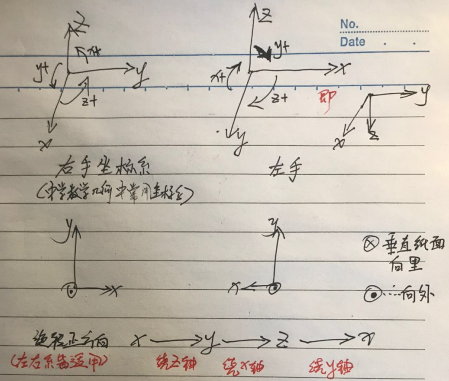
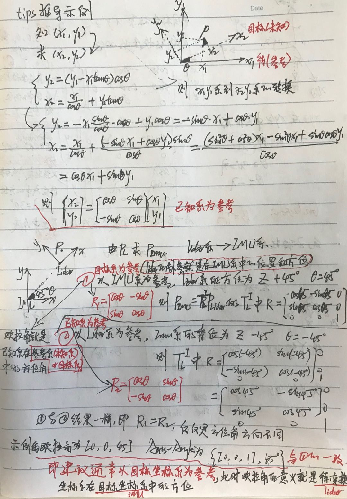
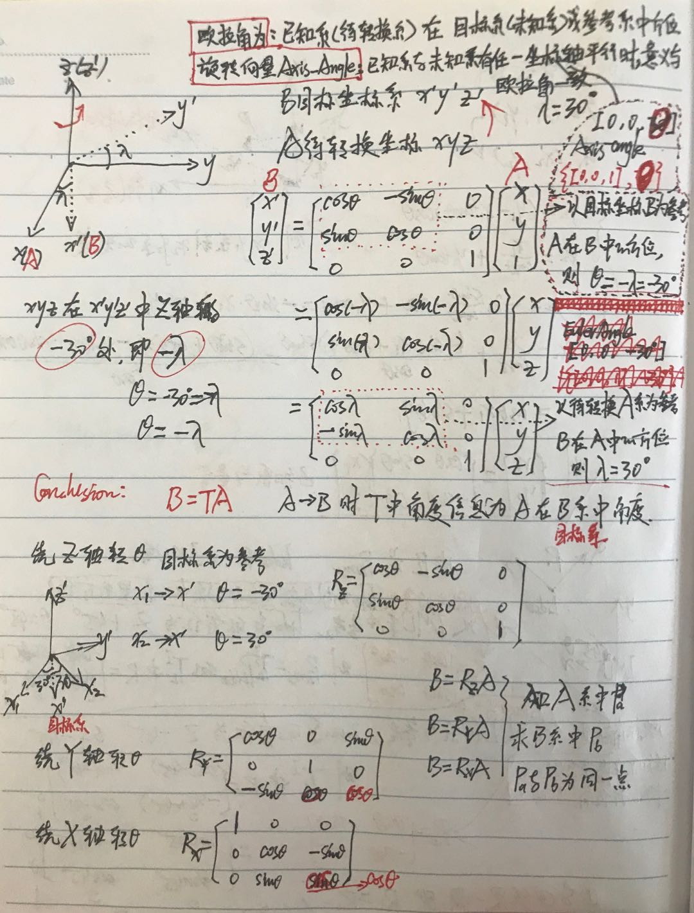

刚体运动-三维旋转变换-2020¶
case0¶
1 2 3 4 | |
case1¶
1 2 3 4 5 6 7 8 9 10 11 12 13 14 15 | |
坐标变换¶
OnlinRigidBodyRotationConverter Tool
欧拉角和旋转向量、旋转矩阵、四元数的对应唯一
- 欧拉角EulerAngle对应的旋转矩阵、四元数是唯一的，对应的旋转向量Axis-Angle有2种可能(与旋转轴正方向有关，但结果一致)。
如绕Z轴逆向旋转45°旋转向量表示
{(0,0,1), -45°}={(0,0,-1), 45°} - 当已知坐标系和目标坐标系3坐标轴有任一坐标轴平行时，欧拉角和旋转向量的表示相差无几
- 反之旋转矩阵和四元数、Axis-Angled对应2种Euler-Angle(与旋转方向有关,一般使用角度不超过180°，结果也一致)。
1 2 3 4 5 6
##### case1 (x,y,z)=(0, 0, -180.1°)=(0, 0, 179.9°) #绕z旋转179.9° (x,y,z)=(0, 0, 180.1°)=(0, 0, -179.9°) #绕z旋转180.1° ##### case2, 绕z轴正向旋转60°, 坐标系为右手坐标系XYZ(degree) (x,y,z)=(0, 0, 60°)=(0, 0, -300°) #等同于旋转向量{(0,0,1), 60°}或{(0,0,-1), -60°}
左手、右手法则¶
判断左手、右手坐标系旋转正方向
-
左手坐标系:左手(x-大拇指、y-食指、z-中指)
对左手坐标系，确定一个旋转轴后，左手握住拳头，拇指指向旋转轴的正方向，四指弯曲的方向为旋转的正方向。
-
右手坐标系:右手(x-大拇指、y-食指、z-中指)
右手坐标系就用右手来判定。确定了旋转的正方向后，在公式计算中就很容易知道是该使用正角度还是负角度了


左乘变换¶
同一个目标在不同坐标系下的坐标变换，如点云从lidar系到imu系的变换是左乘lidar外参 或者 经典的同一点在不同的二维坐标系下的坐标转换(后面有手推过程)
如pcl和ndt的初值和配准的结果为:source(相当于
t1|lidar)在target(相当于t2|imu)中的坐标，因此source(t1|lidar)变换到target(t2|imu)时左乘变换
即A的逆乘以B->B相对A的pose, B左乘该pose转换到 A系
source点云|lidar点云|t1时刻位置在target系|imu系|t2系中的坐标:
右乘变换¶
在同一个坐标系下，不同目标或者同一目标在不同时刻位姿的转换，如world系下由imu的world坐标推lidar的world坐标，或者world系下由车在某时刻world坐标推另一时刻的world坐标
当前时刻\(t_2\)在前一时刻\(t_1\)中的坐标\(T^1_2\)
即A的逆乘以B->B相对A的pose, B右乘该pose转换到 和A同处的坐标系
知道\(t_1\)的pose(\(t_1\)相对全局坐标系)
和\(t_2\)相对\(t_1\)的pose
case: imu / lidar / global坐标系之间的转换
- imu在世界坐标系中位姿 : \(P_{imu}\)
- lidar在imu坐标系中位姿：\(T^i_ {l}\)
- lidar在世界坐标系中位姿：\(P_{l}\) = \(P_{imu}\)\(\times\)\(T^i_ {l}\)
- imu在lidar坐标系中位姿：\(T^l_ {i}\)=\(T^{i-1}_ {l}\)
- imu在世界坐标系中位姿：\(P_{imu}\) = \(P_{l}\)\(\times\)\(T^{i-1}_ {l}\)
也就是：
- \(t_1\)时刻车在world系中位姿为： \(P_1\)，\(t_2\)时刻车在world系中位姿为： \(P_2 = P_1 \times T^1_2\)
- \(t_2\)时刻车体系在\(t_1\)时刻车体系中的位姿为：\(T^1_2 = P_1^{-1} \cdot P_2\)，即所谓上一时刻的逆右乘当前时刻=当前时刻b系在上一时刻b系中的位姿
左乘变换参考系的选取¶
参考系的选取主要是便于理解欧拉角以确定旋转矩阵或四元数
- 如果以待求坐标系(即未知系、目标系)为参考系，欧拉角即为已知系(即待变换系)在参考系中的方位，所以通常以目标系为参考
- 如果以已知系(即待变换系)为参考系，欧拉角和待求坐标系(即未知系、目标系)在参考系中的方位相反！！！
- 以哪个坐标系为参考(一般以目标系为参考系，如东北天->body,顺时针为正)，主要是为了便于理解直观的从EulerAngle或者Axis-Angle的角度理解三维变换，不管以哪个为参考最终的变换都是唯一的
- 以目标系为参考的更加常见(在目标系中的pose, 如yaw就是相对东北天的)，
 
gnss-driver中inspva-odometry绕z轴角度¶
- inspva/azimuth 左手系(顺时针0~180 和 -180~0)
- odometry中yaw角则转为右手系(逆时针0~180 和 -180~0)